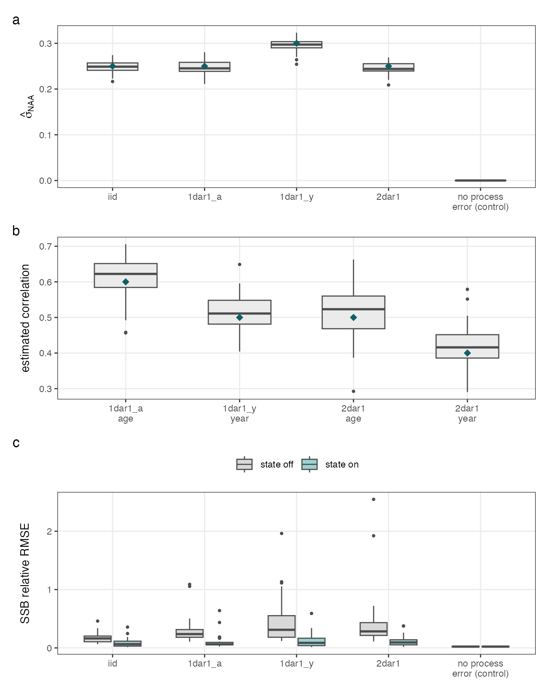

State-Space Numbers at Age as an Approximation to Spatial Process Error
Source:vignettes/ak_state_space_naa_spatial_sim.Rmd
ak_state_space_naa_spatial_sim.RmdOverview
Consider a stock distributed across three regions with different fishing histories, whose survival has process error correlated across those regions. However, in some cases, spatial models may not be feasible. The purpose of this vignette is to demonstrate how state-space treatment of numbers-at-age can in some cases, approximate spatial process error (e.g., through migration). Let us first set up a simulation in the following with three regions, 40 years, and 8 ages.
Operating model
Here, the three regions are linked by modest movement, and each has its own fishing history: region 1 ramps up then eases off, region 2 starts high and recovers, and region 3 is flat throughout. These dynamics are generally unable to be represented within a single-region context.
# fishing mortality by region (rows) and year (columns)
F_by_region_year <- rbind(
region_1 = c(seq(0.02, 0.55, length.out = 24), seq(0.55, 0.20, length.out = 16)), # ramp then ease
region_2 = c(seq(0.30, 0.06, length.out = 20), seq(0.06, 0.35, length.out = 20)), # dip then recover
region_3 = rep(0.15, n_yrs)) # flatSelectivity, weight and maturity at age are shared across regions.
Note that age is the fifth dimension of these arrays, so values at age
need to be repeated over every region and year
(each = n_regions * n_yrs). Using
rep(v, each = n_yrs) as in a single-region model would mix
up the ages once there is more than one region.
fishery_sel_at_age <- 1 / (1 + exp(-3 * ((1:n_ages) - 2)))
survey_sel_at_age <- 1 / (1 + exp(-1 * ((1:n_ages) - 3)))
# dimensions are population, region, year, season, age, sex (and fleet)
fishery_sel <- array(rep(fishery_sel_at_age, each = n_regions * n_yrs),
dim = c(1, n_regions, n_yrs, 1, n_ages, 1, 1))
survey_sel <- array(rep(survey_sel_at_age, each = n_regions * n_yrs),
dim = c(1, n_regions, n_yrs, 1, n_ages, 1, 1))
weight_array <- array(rep(weight_at_age, each = n_regions * n_yrs),
dim = c(1, n_regions, n_yrs, 1, n_ages, 1))
maturity_array <- array(rep(maturity_at_age, each = n_regions * n_yrs),
dim = c(1, n_regions, n_yrs, 1, n_ages, 1))Then, let us set up the fishing mortality and survey observations. For the purposes of self and cross-testing to demonstrate features and identifiability of parameters, we will simulate extremely informative data in this case.
sim_list <- Setup_Sim_Dim(n_sims = 1, n_yrs = n_yrs, n_regions = n_regions,
n_ages = n_ages, n_lens = NULL, n_sexes = 1,
n_fish_fleets = 1, n_srv_fleets = 1, n_pop = 1)
sim_list <- Setup_Sim_Containers(sim_list)
sim_list <- Setup_Sim_Fishing(
sim_list = sim_list,
fish_sel_input = replicate(1, fishery_sel),
ret_sel_input = replicate(1, fishery_sel),
dmr_input = array(0, dim = c(n_regions, n_yrs, 1, 1, 1)),
Fmort_input = array(F_by_region_year, dim = c(n_regions, n_yrs, 1, 1, 1)),
ISS_FishAgeComps = array(400, dim = c(n_regions, n_yrs, 1, 1, 1, 1)))
sim_list <- Setup_Sim_Survey(
sim_list = sim_list,
srv_sel_input = replicate(1, survey_sel),
ObsSrvIdx_SE = array(0.05, dim = c(n_regions, n_yrs, 1, 1)),
ISS_SrvAgeComps = array(400, dim = c(n_regions, n_yrs, 1, 1, 1, 1)))
sim_list <- Setup_Sim_Biologicals(
sim_list = sim_list,
natmort_input = replicate(1, array(0.25, dim = c(1, n_regions, n_yrs, n_ages, 1))),
WAA_input = replicate(1, weight_array),
MatAA_input = replicate(1, maturity_array),
WAA_fish_input = replicate(1, array(weight_array, dim = c(dim(weight_array), 1))),
WAA_srv_input = replicate(1, array(weight_array, dim = c(dim(weight_array), 1))))
sim_list <- Setup_Sim_Tagging(sim_list = sim_list, use_conv_fish_tagging = 0)
# modest movement, so the regions are linked but keep their own histories
# (~82% stay in their region each year, ~9% move to each of the other two)
movement_matrix <- diag(n_regions) * 0.8 + 0.1
movement_matrix <- movement_matrix / rowSums(movement_matrix)
movement_om <- array(0, dim = c(1, n_regions, n_regions, n_yrs, 1, n_ages, 1, 1))
for(y in 1:n_yrs) for(a in 1:n_ages) movement_om[1, , , y, 1, a, 1, 1] <- movement_matrix
sim_list$Movement <- movement_om
sim_list <- Setup_Sim_Rec(
sim_list = sim_list,
R0_input = replicate(1, array(5, dim = c(1, n_regions, n_yrs))),
ln_sigmaR = array(log(0.3), dim = c(2, 1, 1)),
recruitment_opt = "mean_rec",
init_age_strc = 1)Now, specifying Setup_Sim_NAA_state puts process error
on the numbers at age, independent over ages and years but correlated
across regions, with the three pairwise correlations set to 0.7, 0.2 and
0.5 (regions 1 and 2, 1 and 3, and 2 and 3).
sim_list <- Setup_Sim_NAA_state(
sim_list,
NAA_re = "iid", # independent over the age-year grid
sigmaNAA = 0.30,
NAA_re_region = "us", # unstructured across regions
region_corr = c(0.7, 0.2, 0.5))
set.seed(2024)
om <- Simulate_Pop_Static(sim_list = sim_list, output_path = NULL)The simulated process errors are stored in om$naa_eta,
and the realized correlations across regions are close to the values we
specified over a single forty-year realization.
Estimation models
In this case, we fit four estimation models to the same simulated data: a spatial model and a single-region model, each with the state turned off and on.
| Estimation model | Regions | State |
|---|---|---|
| Spatial, state off | 3 | off |
| Spatial, state on | 3 | on, independent over ages and years, correlated across regions |
| Single-region, state off | 1, data aggregated across regions | off |
| Single-region, state on | 1, data aggregated across regions | on, independent over ages and years |
Next, we specify an estimation model (EM) function that uses the
simulated data to construct a SPoRC model. The helper
function simulation_data_to_SPoRC extracts and transforms
the simulated data into the dimensions required by SPoRC.
Here, natural mortality, weight and maturity at age, and movement (in
the spatial model) are fixed at their true values, while selectivity and
catchability are estimated and shared across regions. The state is
turned on through NAA_re and NAA_re_region in
Setup_Mod_Biologicals, with the same structure as the
operating model.
sim_data <- simulation_data_to_SPoRC(sim_env = om, y = n_yrs, sim = 1)
setup_em <- function(sim_data, n_regions_em, NAA_re = "none", NAA_re_region = "iid") {
# compositions by region in the spatial model, aggregated in the single-region model
comp_type <- if(n_regions_em > 1) "spltRspltS" else "agg"
biol_dims <- c(1, n_regions_em, n_yrs, 1, n_ages, 1)
em_weight <- array(rep(weight_at_age, each = n_regions_em * n_yrs), dim = biol_dims)
em_maturity <- array(rep(maturity_at_age, each = n_regions_em * n_yrs), dim = biol_dims)
# movement fixed at the truth, none in the single-region model
if(n_regions_em > 1) {
em_movement <- array(0, dim = c(1, n_regions_em, n_regions_em, n_yrs, 1, n_ages, 1))
for(y in 1:n_yrs) for(a in 1:n_ages) em_movement[1, , , y, 1, a, 1] <- movement_matrix
} else {
em_movement <- NA
}
input_list <- Setup_Mod_Dim(
years = 1:n_yrs, ages = 1:n_ages, lens = NULL, n_regions = n_regions_em,
n_sexes = 1, n_fish_fleets = 1, n_srv_fleets = 1, n_pop = 1,
natal_region = 1, verbose = FALSE)
input_list <- Setup_Mod_Rec(
input_list = input_list, rec_model = "mean_rec", sigmaR_spec = "fix",
ln_sigmaR = array(log(0.3), c(2, 1, n_regions_em)), do_rec_bias_ramp = 0,
sigmaR_switch = 1, init_age_strc = 1, equil_init_age_strc = 2,
ln_global_R0 = log(5 * n_regions_em)) # starting value, true R0 summed over regions
# NAA_re and NAA_re_region turn the state on
input_list <- Setup_Mod_Biologicals(
input_list = input_list, WAA = em_weight, MatAA = em_maturity,
WAA_fish = array(em_weight, dim = c(biol_dims, 1)),
WAA_srv = array(em_weight, dim = c(biol_dims, 1)),
fit_lengths = 0, AgeingError = sim_data$AgeingError, M_spec = "fix",
Fixed_natmort = array(0.25, dim = c(1, n_regions_em, n_yrs, n_ages, 1)),
NAA_re = NAA_re, NAA_re_region = NAA_re_region)
input_list <- Setup_Mod_Tagging(input_list = input_list, use_conv_fish_tagging = 0)
input_list <- Setup_Mod_Movement(
input_list = input_list, use_fixed_movement = 1, do_recruits_move = 0,
Fixed_Movement = em_movement)
input_list <- Setup_Mod_Catch_and_F(
input_list = input_list, ObsCatch = sim_data$ObsCatch, UseCatch = sim_data$UseCatch,
Use_F_pen = 1, sigmaC_spec = "fix", ln_sigmaC = sim_data$ln_sigmaC,
ln_sigmaF = array(log(1), dim = c(n_regions_em, 1, 1)),
ObsDiscard = sim_data$ObsDiscard, UseDiscard = sim_data$UseDiscard,
sigma_dmr_spec = "fix", dmr_mean_spec = "fix", ln_sigmaD = sim_data$ln_sigmaD)
# fishery age comps only, no fishery index
input_list <- Setup_Mod_FishIdx_and_Comps(
input_list = input_list, ObsFishIdx = sim_data$ObsFishIdx,
ObsFishIdx_SE = sim_data$ObsFishIdx_SE,
UseFishIdx = array(0, dim = dim(sim_data$UseFishIdx)),
ObsFishAgeComps = sim_data$ObsFishAgeComps, ObsFishLenComps = NULL,
UseFishAgeComps = sim_data$UseFishAgeComps,
UseFishLenComps = array(0, dim = dim(sim_data$UseFishAgeComps)),
ISS_FishAgeComps = sim_data$ISS_FishAgeComps, ISS_FishLenComps = NULL,
fish_idx_type = "biom", FishAgeComps_LikeType = "Multinomial",
FishLenComps_LikeType = "none",
FishAgeComps_Type = paste0(comp_type, "_Year_1-terminal_Fleet_1"),
FishLenComps_Type = "none_Year_1-terminal_Fleet_1")
input_list <- Setup_Mod_SrvIdx_and_Comps(
input_list = input_list, ObsSrvIdx = sim_data$ObsSrvIdx,
ObsSrvIdx_SE = sim_data$ObsSrvIdx_SE,
UseSrvIdx = sim_data$UseSrvIdx, SrvIdx_LikeType = "lognormal",
ObsSrvAgeComps = sim_data$ObsSrvAgeComps, ObsSrvLenComps = NULL,
UseSrvAgeComps = sim_data$UseSrvAgeComps,
UseSrvLenComps = array(0, dim = dim(sim_data$UseSrvAgeComps)),
ISS_SrvAgeComps = sim_data$ISS_SrvAgeComps, ISS_SrvLenComps = NULL,
srv_idx_type = "biom", SrvAgeComps_LikeType = "Multinomial",
SrvLenComps_LikeType = "none",
SrvAgeComps_Type = paste0(comp_type, "_Year_1-terminal_Fleet_1"),
SrvLenComps_Type = "none_Year_1-terminal_Fleet_1")
# logistic selectivity and catchability, shared across regions
input_list <- Setup_Mod_Fishsel_and_Q(
input_list = input_list, fish_sel_model = "logist1_Fleet_1",
fish_fixed_sel_pars_spec = "est_shared_r", fish_q_spec = "est_shared_r",
use_fixed_ret_sel = 1)
input_list <- Setup_Mod_Srvsel_and_Q(
input_list = input_list, srv_sel_model = "logist1_Fleet_1",
srv_fixed_sel_pars_spec = "est_shared_r", srv_q_spec = "est_shared_r")
Setup_Mod_Weighting(
input_list = input_list, Wt_Catch = 1, Wt_FishIdx = 1, Wt_SrvIdx = 1, Wt_Rec = 1, Wt_F = 1,
Wt_FishAgeComps = array(1, dim = c(n_regions_em, n_yrs, 1, 1, 1)),
Wt_SrvAgeComps = array(1, dim = c(n_regions_em, n_yrs, 1, 1, 1)))
}Aggregating the data to a single region
For the single-region model, we aggregate the data across regions. Catch and the survey biomass index are summed across regions, and the age compositions are combined by weighting each region’s proportions by that region’s survey index.
sim_data_agg <- sim_data
# sum catch and survey index across regions
sim_data_agg$ObsCatch <- array(apply(sim_data$ObsCatch, 2:4, sum), dim = c(1, n_yrs, 1, 1))
sim_data_agg$UseCatch <- array(1, dim = dim(sim_data_agg$ObsCatch))
sim_data_agg$ln_sigmaC <- array(sim_data$ln_sigmaC[1, , , , drop = FALSE],
dim = dim(sim_data_agg$ObsCatch))
sim_data_agg$ObsSrvIdx <- array(apply(sim_data$ObsSrvIdx, 2:4, sum), dim = c(1, n_yrs, 1, 1))
sim_data_agg$ObsSrvIdx_SE <- array(sim_data$ObsSrvIdx_SE[1, , , , drop = FALSE],
dim = dim(sim_data_agg$ObsSrvIdx))
sim_data_agg$UseSrvIdx <- array(1, dim = dim(sim_data_agg$ObsSrvIdx))
# weight each region's age comps by its survey index
srv_idx_by_region <- sim_data$ObsSrvIdx[, , 1, 1] # region x year
for(comp_name in c("ObsSrvAgeComps", "ObsFishAgeComps")) {
agg_comps <- array(0, dim = c(1, n_yrs, 1, n_ages, 1, 1))
for(y in 1:n_yrs) {
weighted_props <- colSums(sim_data[[comp_name]][, y, 1, , 1, 1] * srv_idx_by_region[, y])
agg_comps[1, y, 1, , 1, 1] <- weighted_props / sum(weighted_props)
}
sim_data_agg[[comp_name]] <- agg_comps
}
sim_data_agg$UseSrvAgeComps <- array(1, dim = c(1, n_yrs, 1, 1))
sim_data_agg$UseFishAgeComps <- sim_data_agg$UseSrvAgeComps
sim_data_agg$ISS_SrvAgeComps <- array(400 * n_regions, dim = c(1, n_yrs, 1, 1, 1))
sim_data_agg$ISS_FishAgeComps <- sim_data_agg$ISS_SrvAgeComps
# fishery index and discards aren't fit, but still need single-region arrays
for(name in c("ObsFishIdx", "ObsFishIdx_SE", "UseFishIdx", "ObsDiscard", "UseDiscard"))
sim_data_agg[[name]] <- array(0, dim = c(1, n_yrs, 1, 1))
sim_data_agg$ln_sigmaD <- array(log(0.1), dim = c(1, n_yrs, 1, 1))Fitting
Note that ln_NAA is the log numbers at age themselves
rather than deviations, and starts from an equilibrium age structure
built from
and
,
so starting values do not need to be supplied by hand. Here, the model
has a single season, so the default
NAA_re_seasons = "annual" puts a state at the start of
every year. However, we start the fixed effects of each model with the
state on at the estimates from the same model with the state off, so
that both fits start from the same place. With random effects,
nlminb can also stop before the gradient is small, so we
restart the optimization from where it stopped (up to three times) until
the maximum gradient is below 1e-4.
start_from_state_off_fit <- function(input_list, input_list_state_off) {
fit_state_off <- fit_model(input_list_state_off$data, input_list_state_off$par,
input_list_state_off$map, random = NULL, silent = TRUE)
estimates <- fit_state_off$env$parList(fit_state_off$env$last.par.best)
for(par_name in intersect(names(estimates), names(input_list$par)))
if(length(input_list$par[[par_name]]) == length(estimates[[par_name]]))
input_list$par[[par_name]][] <- estimates[[par_name]]
input_list
}
fit_with_restarts <- function(input_list, random = NULL, max_restarts = 3) {
fit <- fit_model(input_list$data, input_list$par, input_list$map, random = random, silent = TRUE)
best <- fit$env$last.par.best
if(length(fit$env$random)) best <- best[-fit$env$random] # fixed effects only
for(i in seq_len(max_restarts)) {
max_gradient <- max(abs(fit$gr(best)))
if(max_gradient < 1e-4) break
restart <- try(stats::nlminb(best, fit$fn, fit$gr,
control = list(iter.max = 1e5, eval.max = 1e5, rel.tol = 1e-15)),
silent = TRUE)
if(inherits(restart, "try-error") || max(abs(fit$gr(restart$par))) >= max_gradient) break
best <- restart$par
}
list(obj = fit, max_gradient = max(abs(fit$gr(best))), rep = fit$report(fit$env$last.par.best))
}Let us now set up and fit the four models. Here,
random = "ln_NAA" integrates the state out as random
effects.
spatial_state_off <- setup_em(sim_data, n_regions)
spatial_state_on <- start_from_state_off_fit(
setup_em(sim_data, n_regions, NAA_re = "iid", NAA_re_region = "us"), spatial_state_off)
single_region_state_off <- setup_em(sim_data_agg, 1)
single_region_state_on <- start_from_state_off_fit(
setup_em(sim_data_agg, 1, NAA_re = "iid"), single_region_state_off)
fits <- list(
"Spatial, state off" = fit_with_restarts(spatial_state_off),
"Spatial, state on" = fit_with_restarts(spatial_state_on, random = "ln_NAA"),
"Single-region, state off" = fit_with_restarts(single_region_state_off),
"Single-region, state on" = fit_with_restarts(single_region_state_on, random = "ln_NAA"))We can then compare spawning biomass from each model, summed across regions, to the operating model’s truth.
true_ssb <- colSums(om$SSB[1, , 1:n_yrs, 1]) # summed across regions
ssb_error <- data.frame(model = names(fits), rel_rmse = NA, median_rel_error_pct = NA,
max_gradient = NA)
for(i in seq_along(fits)) {
est_ssb <- apply(fits[[i]]$rep$SSB, 3, sum) # SSB is population x region x year
rel_error <- (est_ssb - true_ssb) / true_ssb
ssb_error$rel_rmse[i] <- sqrt(mean(rel_error^2))
ssb_error$median_rel_error_pct[i] <- 100 * median(rel_error)
ssb_error$max_gradient[i] <- fits[[i]]$max_gradient
}
ssb_errorResults
We ran twelve replicates at each of four process error levels, including a control where the operating model has none at all. Every model in this case converged. Spawning biomass is summed across regions and compared to the operating model’s truth over forty years.
| Spatial, state off | Spatial, state on | Single-region, state off | Single-region, state on | |
|---|---|---|---|---|
| 0.00 | +2.0% | +2.0% | +6.9% | +6.9% |
| 0.05 | +2.7% | +2.7% | +8.0% | +8.4% |
| 0.15 | +6.3% | +1.3% | +15.8% | +15.8% |
| 0.30 | +22.2% | +3.7% | +45.7% | +28.0% |
Differences are minimal for the single-region model when process error in the operating model is switched off, most likely because there is no demographic leakage in this case: the three areas are summed, so no fish leave the domain the model describes. Had the single-region model covered only one of the three areas instead, movement across its boundary would have been real, and the state would likely have reduced the bias there. As the process error grows, however, it becomes apparent that turning the state on soaks up some of the single-region model’s misspecification, cutting the bias from 45.7 to 28.0 percent at the largest level. For the spatial model, turning the state on removes most of the bias once the operating model has process error.
The parameters of the process itself are also recoverable. Fitting a single-region model to data simulated from a single-region operating model (not shown in this case study here), across thirty replicates at each structure, the process error standard deviation and every correlation are estimated close to the values that generated them, and the standard deviation is estimated at exactly zero when the operating model has no process error at all.
